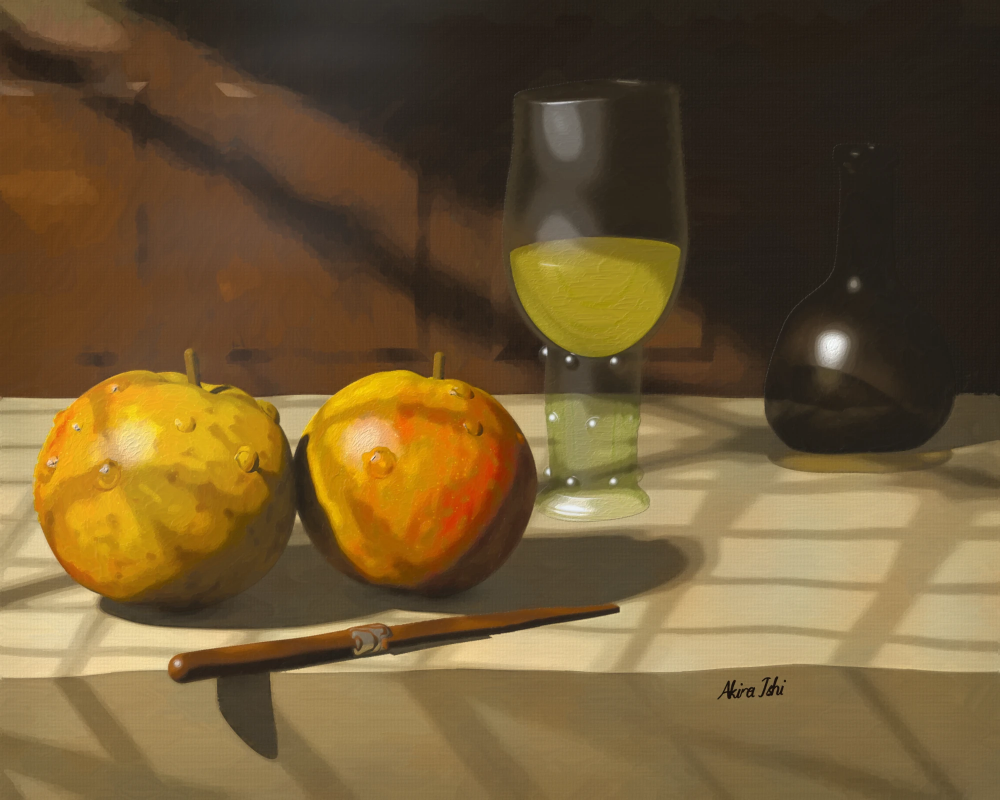
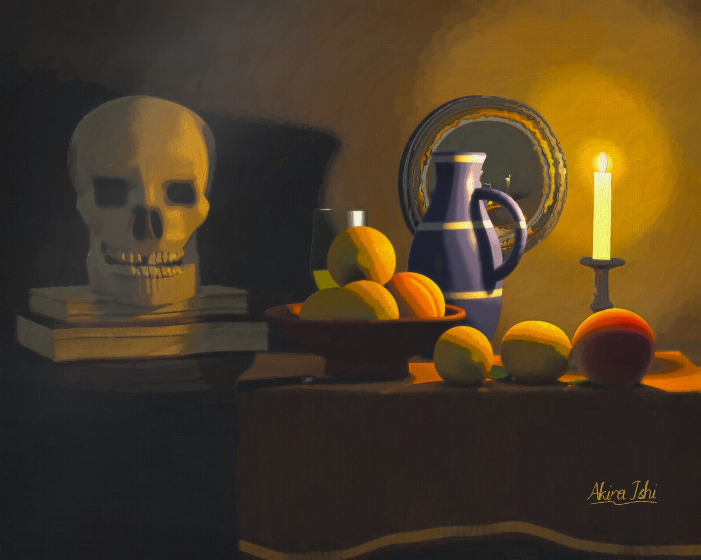
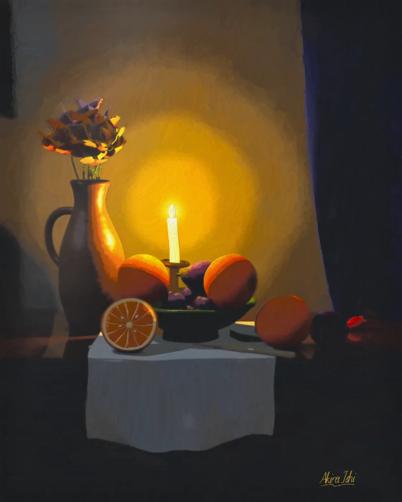
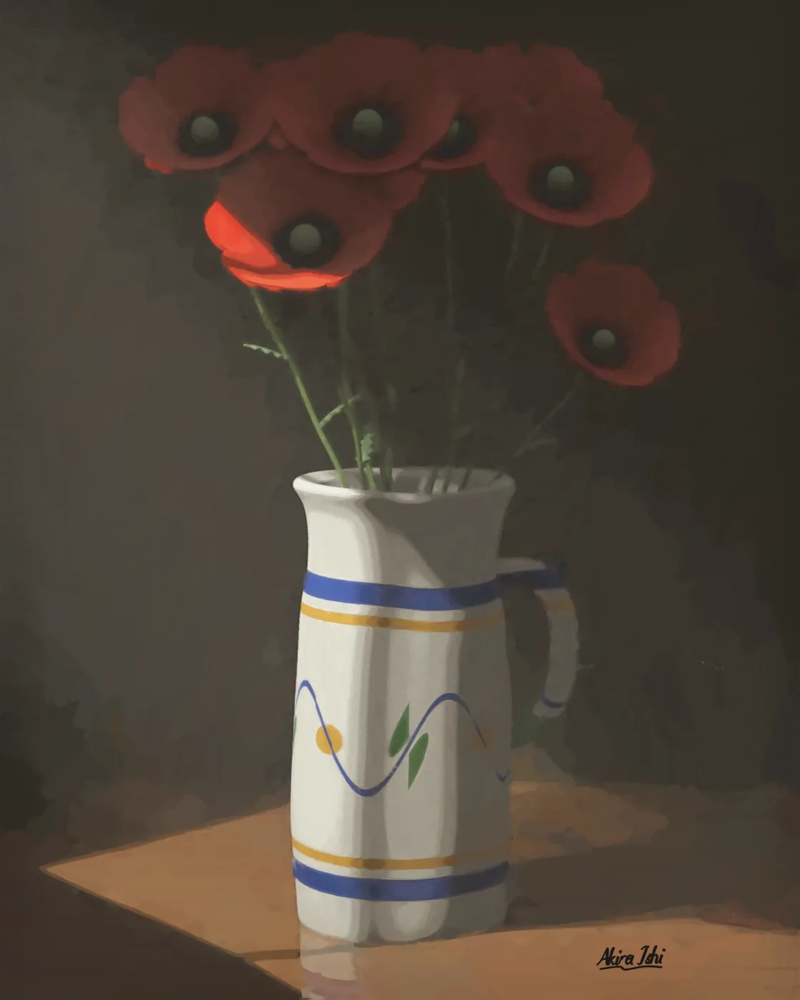
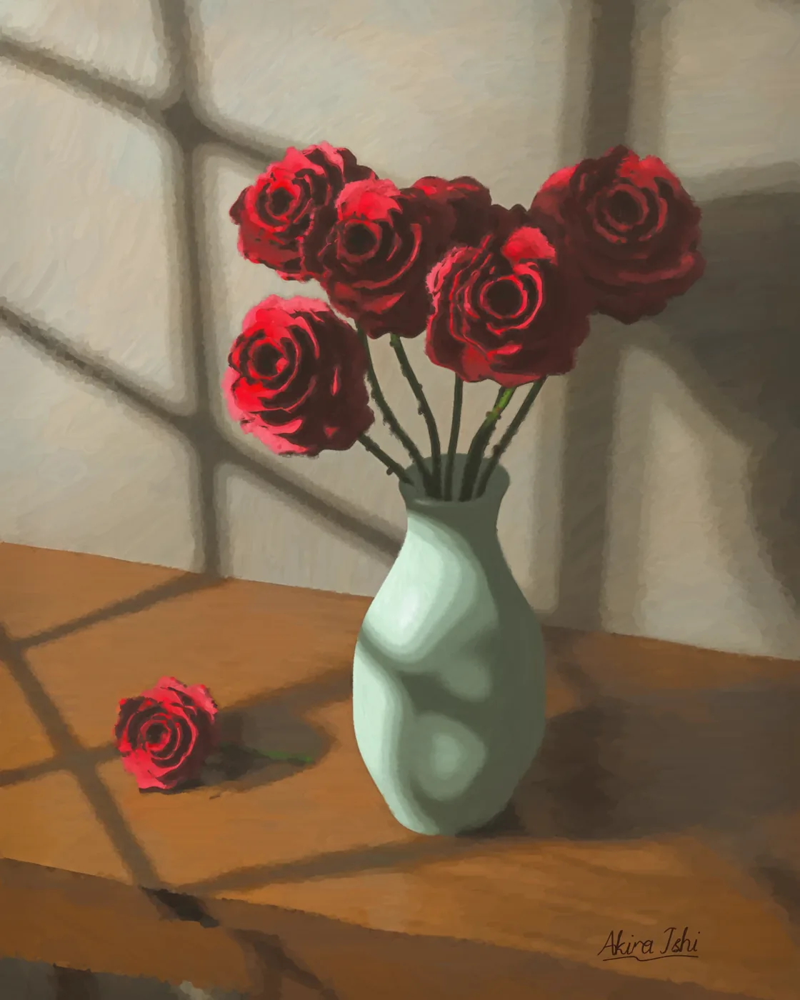

Etsy
Visit the shop
Akira Ishi — Prints & Editions
Still Life Code paintings printed to order on poster paper, canvas or fine art paper, with or without a frame.
- Made to order
- Ships worldwide
- Secure Etsy checkout

PrintStill Life with Apples
View in shop →
PrintStill Life with Skull
View in shop →
PrintStill Life with Candle and Oranges
View in shop →Skull Candle and Sunflowers
View in shop →
PrintStill Life with Poppies
View in shop →
Print